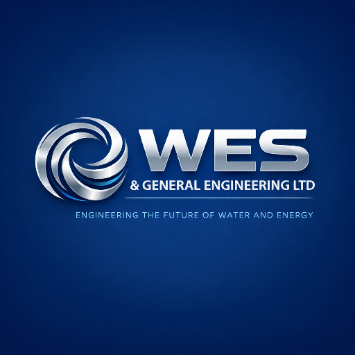
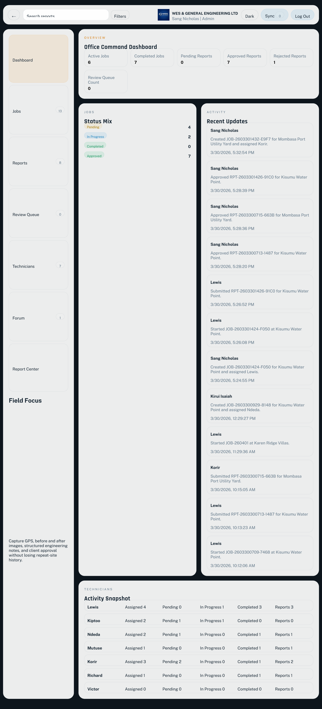
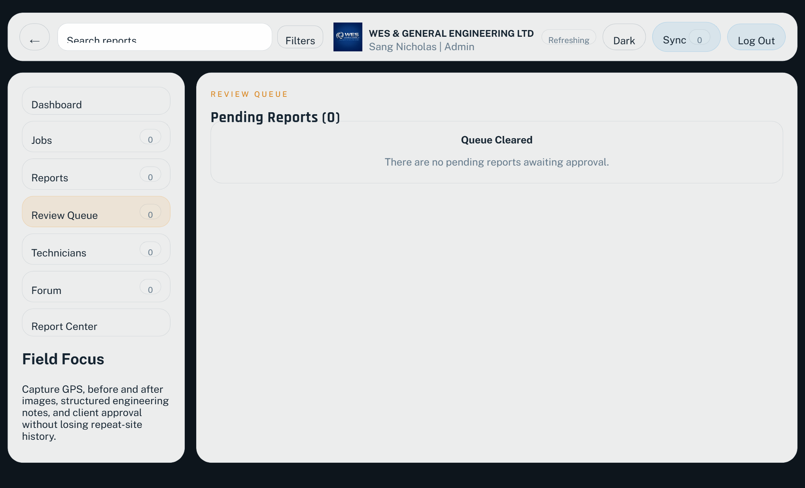
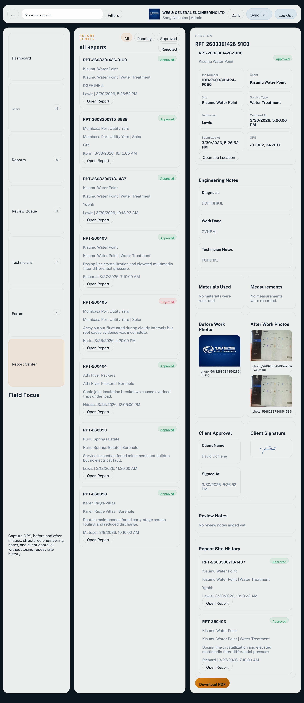
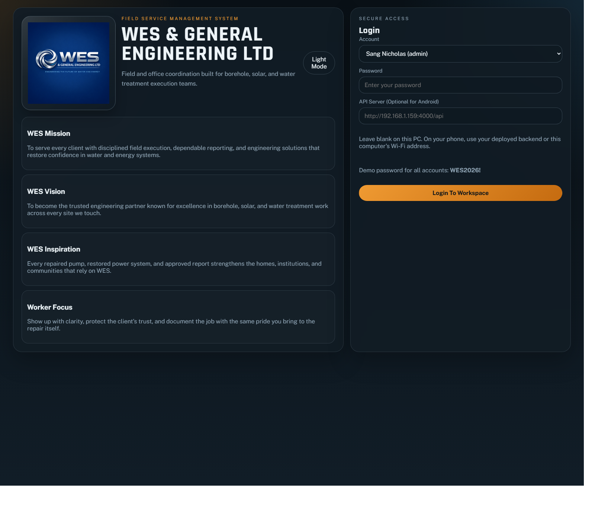

Executive Presentation
WES Field Service Manager
A mobile-first field operations platform for borehole, solar, and water treatment work. It gives WES one system for dispatch, field evidence, technician control, approvals, and repeat-site intelligence.
31 March 2026
Why It Matters
What this system solves for WES
Current field risk
- Job instructions can be fragmented between office and site teams.
- Repeat sites are hard to brief without a clean history of previous visits.
- Evidence of work can be inconsistent when photos, notes, and approvals are separated.
System response
- Admins create and assign jobs from one command dashboard.
- Technicians execute only their assigned jobs and submit structured reports.
- Every site keeps a reusable service memory, including past diagnoses and photos.
Management outcome
- Faster dispatch and clearer accountability.
- Better coaching for revisit jobs and unresolved faults.
- Higher confidence in approvals, client communication, and audit trails.
Access Model
Simple governance: two roles only
Admin control
Sang Nicholas, Kirui Isaiah, Judy
- Create and assign jobs.
- View all jobs, all reports, and technician activity.
- Approve or reject submitted reports.
- Manage technician records and reset technician passwords.
- Download approved reports and manage the review queue.
Technician execution
Lewis, Kiptoo, Ndeda, Mutuse, Korir, Richard, Victor
- See only assigned jobs.
- Start jobs, submit reports, and access job locations.
- Capture unlimited before and after images.
- Record diagnosis, work done, materials, measurements, and notes.
- View only their own reports, while still seeing repeat-site history inside assigned jobs.
Workflow
How the WES service cycle moves through the system
Client, site, contact, service type, GPS or manual location, and assigned technician are captured.
Past site visits and reports remain part of the job context so office and field teams start informed.
Status moves from Pending to In Progress, keeping the dashboard live and current.
GPS, time, diagnosis, work done, materials, measurements, and before and after images are captured.
Name, digital signature, and timestamp are attached to the submitted report.
Approved reports become downloadable PDFs and remain permanently attached to the site history.
Live Product View
Office command dashboard

1 2 3 4Active jobs, completed jobs, pending reports, approved reports, and rejected reports are visible on one screen.
Management can see who created, started, submitted, and approved work, with timestamps for accountability.
The dashboard shows the workload and current status mix across the technician team.
Dashboard buttons and counters lead to the exact operational page management wants to inspect.
Live Product View
Approval queue and report governance
1. Review queue

Admins move from the command menu into a dedicated review queue instead of searching through jobs manually.
2. Engineering notes

Diagnosis, work done, technician notes, materials, and measurements are visible before any approval decision is made.
3. Photo and client proof
Before-and-after images, client name, signature, and signed time give WES auditable proof of what happened on site.
4. Repeat-site governance
Repeat-site history stays inside the review record so the office can brief the next technician with evidence, not memory.
Admins always see how many reports still need approval from the command menu.
The office sees the complete engineering report, not just a summary, before approving or rejecting field work.
Photo proof, GPS, timestamps, technician notes, and client sign-off are reviewed together so decisions stay defensible.
Past site reports remain visible during approval, helping management guide the next technician on unresolved or recurring faults.
Once a report is approved, it exits the queue permanently and becomes a formal downloadable record for WES and the client.
Live Product View
Full report detail with repeat-site intelligence
Diagnosis, work done, technician notes, materials used, and measurements are presented in one readable review layout.
Photo evidence is embedded in the report, giving management visual proof of field condition and completion.
The client name, signature, and signed time are part of the report, reducing disputes after site work.
Older site visits stay visible here, allowing admins to brief the next technician with real historical evidence.
Once approved, the report becomes a formal downloadable document for office records and client sharing.
Mobile Story
Built for desktop control and field mobility

What the mobile app gives WES
- The same WES workflow can be packaged and installed as an Android APK.
- Technicians can work from the field using a familiar mobile interface.
- API server switching supports office testing, local Wi-Fi testing, and future production hosting.
Field-ready data capture
- GPS capture for site evidence.
- Before and after image capture, including live-photo workflows on phone.
- Structured notes, materials, measurements, and client signature capture.
- Sync queue behavior for unstable connectivity and later upload.
Why this matters to management
This is not only a browser dashboard. It is a field-operational platform that can move with technicians while keeping office oversight intact.
Technology And Control
Architecture, security, and scaling path
React web application with responsive layouts for desktop and mobile.
Node.js and Express API handling auth, jobs, reports, search, review queue, and forum messaging.
Current local demo build runs on workspace-backed data; production path supports structured database deployment.
JWT-based access, role-based visibility, protected review flow, and controlled access to technician records.
Android APK delivery through the current wrapper, enabling installation on technician phones.
Current demonstration strengths
- Live dashboards and role separation.
- Approval control and PDF-ready reporting.
- Repeat-site history visible inside job and report context.
- Mobile app path already proven with APK packaging.
Production hardening path
- Move persistent storage to managed cloud infrastructure.
- Introduce cloud object storage for image evidence.
- Set backup, audit, and retention policies.
- Deploy secure domain, SSL, and admin monitoring.
Management Decision
Recommended rollout plan
Run a controlled pilot with the three admins and a small technician group across borehole and water treatment jobs.
Provision hosting, cloud storage, backup policy, and the final production API endpoint for the APK.
Roll out to the complete technician team, train supervisors, and make report approval part of standard office control.
What management should approve next
- Pilot scope and owners.
- Production hosting and storage budget.
- Approval SLA for report review.
- Device policy for technician phones.
Expected business result
WES moves from fragmented field coordination to a controlled service operation where the office sees the truth of the job, the technician sees the history of the site, and management has evidence for every completed visit.
This positions WES for stronger service quality, faster decision-making, and better client confidence.